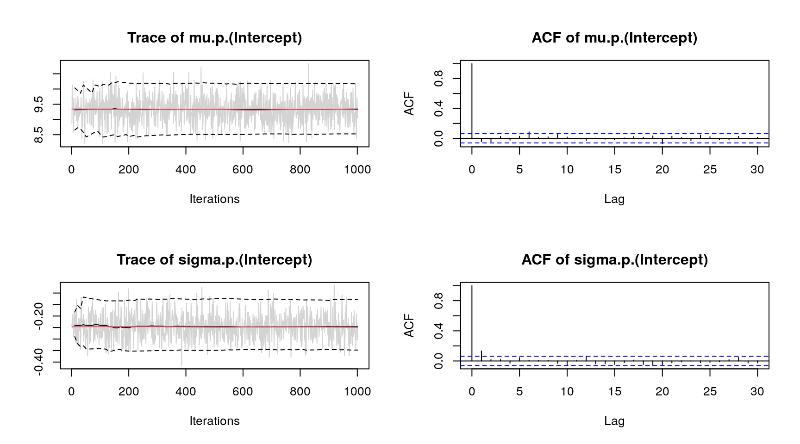

Distributional Regression with bamlss
Nikolaus Umlauf, Nadja Klein, Achim Zeileis, Thorsten Simon
bamlss.RmdOverview
The R package bamlss provides a modular computational framework for distributional regression models (and beyond). The implementation follows the conceptional framework presented in Umlauf, Klein, and Zeileis (2018), which supports Bayesian and/or frequentist estimation engines using complex possibly nonlinear model terms of any type. The highlights of the package are:
- A unified model description where a
formulaspecifies how to set up the predictors from thedataandfamilyobjects provide information about the response distribution. - A generic method for setting up model terms and a
model.framealong with the corresponding prior structures. Atransformercan optionally set up modified terms, e.g., using mixed model representation for smooth terms. - Support for modular and exchangeable updating functions or complete model fitting engines in order to optionally implement either algorithms for maximization of the log-posterior for posterior mode estimation or for solving high-dimensional integrals, e.g., for posterior mean or median estimation. First, an (optional)
optimizerfunction can be run, e.g., for computing posterior mode estimates. Second, asampleris employed for full Bayesian inference with MCMC, which uses the posterior mode estimates from theoptimizeras staring values. An additional step can be used for preparing theresults. - Standard post-modeling extractor functions to create sampling statistics, visualizations, predictions, etc.
More detailed overviews and examples are provided in the articles:
Installation
The stable release version of bamlss is hosted on the Comprehensive R Archive Network (CRAN) at https://CRAN.R-project.org/package=bamlss and can be installed via
install.packages("bamlss")The development version of bamlss is hosted on R-Forge at https://R-Forge.R-project.org/projects/bayesr/ in a Subversion (SVN) repository. It can be installed via
install.packages("bamlss", repos = "http://R-Forge.R-project.org")Basic Bayesian regression
This section gives a first quick overview of the functionality of the package and demonstrates that the usual “look & feel” when using well-established model fitting functions like glm() is an elementary part of bamlss, i.e., first steps and basic handling of the package should be relatively simple. We illustrate the first steps with bamlss using a data set taken from the Regression Book (Fahrmeir et al. 2013) which is about prices of used VW Golf cars. The data is loaded with
## price age kilometer TIA abs sunroof
## 1 7.30 73 10 12 yes yes
## 2 3.85 115 30 20 yes no
## 3 2.95 127 43 6 no yes
## 4 4.80 104 54 25 yes yes
## 5 6.20 86 57 23 no no
## 6 5.90 74 57 25 yes noIn this example the aim is to model the price in 1000 Euro. Using bamlss a first Bayesian linear model could be set up by first specifying a model formula
f <- price ~ age + kilometer + TIA + abs + sunroofafterwards the fully Bayesian model using MCMC simulation is estimated by
Note that the default number of iterations for the MCMC sampler is 1200, the burnin-phase is 200 and thinning is 1 (see the manual of the default MCMC sampler GMCMC()). The reason is that during the modeling process, users usually want to obtain first results rather quickly. Afterwards, if a final model is estimated the number of iterations of the sampler is usually set much higher to get close to i.i.d. samples from the posterior distribution. To obtain reasonable starting values for the MCMC sampler we run a backfitting algorithm that optimizes the posterior mode. The bamlss package uses its own family objects, which can be specified as characters using the bamlss() wrapper, in this case family = "gaussian" (see also BAMLSS Families). In addition, the package also supports all families provided from the gamlss families.
The model summary gives
summary(b1)##
## Call:
## bamlss(formula = f, family = "gaussian", data = Golf)
## ---
## Family: gaussian
## Link function: mu = identity, sigma = log
## *---
## Formula mu:
## ---
## price ~ age + kilometer + TIA + abs + sunroof
## -
## Parametric coefficients:
## Mean 2.5% 50% 97.5% parameters
## (Intercept) 9.333318 8.526293 9.330200 10.173709 9.311
## age -0.038461 -0.045355 -0.038341 -0.031706 -0.038
## kilometer -0.009686 -0.012547 -0.009667 -0.007061 -0.010
## TIA -0.005811 -0.022870 -0.005752 0.010105 -0.005
## absyes -0.240481 -0.492048 -0.237776 -0.003060 -0.238
## sunroofyes -0.024021 -0.300878 -0.025127 0.238145 -0.010
## alpha 0.999998 0.999989 1.000000 1.000000 NA
## ---
## Formula sigma:
## ---
## sigma ~ 1
## -
## Parametric coefficients:
## Mean 2.5% 50% 97.5% parameters
## (Intercept) -0.2457 -0.3479 -0.2465 -0.1274 -0.271
## alpha 0.9703 0.7652 1.0000 1.0000 NA
## ---
## Sampler summary:
## -
## DIC = 408.9675 logLik = -201.0372 pd = 6.8932
## runtime = 1.274
## ---
## Optimizer summary:
## -
## AICc = 409.6319 converged = 1 edf = 7
## logLik = -197.4745 logPost = -252.2614 nobs = 172
## runtime = 0.011
## ---indicating high acceptance rates as reported by the alpha parameter in the linear model output, which is a sign of good mixing of the MCMC chains. The mixing can also be inspected graphically by
plot(b1, which = "samples") Note, for convenience we only show the traceplots of the intercepts. Considering significance of the estimated effects, only variables TIA and sunroof seem to have no effect on price since the credible intervals of estimated parameters contain zero. This information can also be extracted using the implemented confint() method.
## 2.5% 97.5%
## mu.(Intercept) 8.52629257 10.173709336
## mu.age -0.04535461 -0.031705531
## mu.kilometer -0.01254739 -0.007060627
## mu.TIA -0.02286985 0.010105028
## mu.absyes -0.49204765 -0.003060006
## mu.sunroofyes -0.30087769 0.238144948
## sigma.(Intercept) -0.34791813 -0.127380063Since the prices cannot be negative, a possible consideration is to use a logarithmic transformation of the response price
set.seed(111)
f <- log(price) ~ age + kilometer + TIA + abs + sunroof
b2 <- bamlss(f, family = "gaussian", data = Golf)and compare the models using the DIC()
DIC(b1, b2)## DIC pd
## b1 408.96754 6.893153
## b2 -15.19596 6.893153indicating that the transformation seems to improve the model fit.
Predictions can be easily computed using the predict() method. One major difference compared to other regression model implementations is that predictions can be made for single variables, only, where the user does not have to create a new data frame containing all variables. For example, posterior mean estimates and 95% credible intervals for variable age can be obtained by
nd <- data.frame("age" = seq(min(Golf$age), max(Golf$age), length = 100))
p <- predict(b2, newdata = nd, model = "mu", term = "age", FUN = c95)
print(head(p))## 2.5% Mean 97.5%
## 1 1.905196 2.065724 2.226153
## 2 1.898128 2.057578 2.217355
## 3 1.891059 2.049432 2.208557
## 4 1.883990 2.041287 2.199759
## 5 1.876921 2.033141 2.191380
## 6 1.869516 2.024995 2.183378Here, we need to specify for which model predictions should be calculated, and if predictions only for variable age are created, argument term needs also be specified. Argument FUN can be any function that should be applied on the samples of the linear predictor. For more examples see the documentation of the predict.bamlss() method.
Then, the estimated effect of age can be visualized with
 The figure clearly shows the negative effect on the logarithmic
The figure clearly shows the negative effect on the logarithmic price for variable age.
Location-scale model
As a second startup on how to use bamlss for full distributional regression, we illustrate the basic steps on a small textbook example using the well-known simulated motorcycle accident data (Silverman 1985). The data contain measurements of the head acceleration (in \(g\), variable accel) in a simulated motorcycle accident, recorded in milliseconds after impact (variable times).
## times accel
## 1 2.4 0.0
## 2 2.6 -1.3
## 3 3.2 -2.7
## 4 3.6 0.0
## 5 4.0 -2.7
## 6 6.2 -2.7To estimate a Gaussian location-scale model with \[ \texttt{accel} \sim \mathcal{N}(\mu = f(\texttt{times}), \log(\sigma) = f(\texttt{times})) \] we use the following model formula
f <- list(accel ~ s(times, k = 20), sigma ~ s(times, k = 20))where s() is the smooth term constructor from the mgcv (Wood 2019). Note, that formulae are provided as lists of formulae, i.e., each list entry represents one parameter of the response distribution. Also note that all smooth terms, i.e., te(), ti(), etc., are supported by bamlss. This way, it is also possible to incorporate user defined model terms. A full Bayesian model is the estimated with
set.seed(123)
b <- bamlss(f, data = mcycle, family = "gaussian",
n.iter = 12000, burnin = 2000, thin = 10)using 12000 iterations for the MCMC chain, a burnin of 2000 (dropped samples) and a thinning of 10, i.e., only every 10th sample is saved. Note that per defaul bamlss() uses a backfitting algorithm to compute posterior mode estimates, afterwards these estimates are used as starting values for the MCMC chains. The returned object is of class "bamlss" for which generic extractor functions like summary(), plot(), predict(), etc., are provided. For example, the estimated effects for distribution paramaters mu and sigma can be visualized by
 The model summary gives
The model summary gives
summary(b)##
## Call:
## bamlss(formula = f, family = "gaussian", data = mcycle, n.iter = 12000,
## burnin = 2000, thin = 10)
## ---
## Family: gaussian
## Link function: mu = identity, sigma = log
## *---
## Formula mu:
## ---
## accel ~ s(times, k = 20)
## -
## Parametric coefficients:
## Mean 2.5% 50% 97.5% parameters
## (Intercept) -25.17 -28.91 -25.18 -21.23 -25.14
## alpha 1.00 1.00 1.00 1.00 NA
## -
## Smooth terms:
## Mean 2.5% 50% 97.5% parameters
## s(times).tau21 425085.57 174273.68 375068.34 937318.30 209333.1
## s(times).alpha 1.00 1.00 1.00 1.00 NA
## s(times).edf 14.24 12.54 14.25 15.92 13.6
## ---
## Formula sigma:
## ---
## sigma ~ s(times, k = 20)
## -
## Parametric coefficients:
## Mean 2.5% 50% 97.5% parameters
## (Intercept) 2.6841 2.5535 2.6816 2.8193 2.581
## alpha 0.9665 0.7364 0.9997 1.0000 NA
## -
## Smooth terms:
## Mean 2.5% 50% 97.5% parameters
## s(times).tau21 1.328e+02 1.408e+01 1.043e+02 4.142e+02 81.399
## s(times).alpha 5.040e-01 1.287e-04 4.576e-01 1.000e+00 NA
## s(times).edf 9.107e+00 5.706e+00 9.166e+00 1.234e+01 8.675
## ---
## Sampler summary:
## -
## DIC = 1115.331 logLik = -545.6219 pd = 24.0874
## runtime = 28.84
## ---
## Optimizer summary:
## -
## AICc = 1123.881 converged = 1 edf = 24.2716
## logLik = -531.9752 logPost = -747.4101 nobs = 133
## runtime = 0.317
## ---showing, e.g., the acceptance probabilities of the MCMC chains (alpha), the estimated degrees of freedom of the optimizer and the successive sampler (edf), the final AIC and DIC as well as parametric model coefficients (in this case only the intercepts). As mentioned in the first example, using MCMC involves convergence checks of the sampled parameters. The easiest diagnostics are traceplots
plot(b, which = "samples") Note again that this call would show all traceplots, for convenience we only show the plots for the intercepts. In this case, the traceplots indicate convergence of the Markov chains (only the ACF for parameter
Note again that this call would show all traceplots, for convenience we only show the plots for the intercepts. In this case, the traceplots indicate convergence of the Markov chains (only the ACF for parameter "mu" still shows some autocorrelation, which could be further reduced, e.g., by increasing the thinning parameter). Further inspections are the maximum autocorrelation of all parameters, which = "max-acf", besides other convergence diagnostics, e.g., diagnostics that are part of the coda package (Plummer et al. 2006).
Inspecting randomized quantile residuals (Dunn and Smyth 1996) is useful for judging how well the model fits to the data
 Randomized quantile residuals are the default method in bamlss, which are computed using the cdf function of the corresponding family object.
Randomized quantile residuals are the default method in bamlss, which are computed using the cdf function of the corresponding family object.
The posterior mean function for new data based on MCMC samples for parameter \(\mu\) can be computed by
nd <- data.frame("times" = seq(2.4, 57.6, length = 100))
nd$p <- predict(b, newdata = nd, model = "mu", FUN = mean)
plot2d(p ~ times, data = nd) where argument
where argument FUN can be any function, e.g., a function computing credible intervals from the empirical quantiles of the MCMC samples
foo <- function(x) {
quantile(x, probs = c(0.025, 0.5, 0.975))
}
nd$p <- predict(b, newdata = nd, model = "mu", FUN = foo)
print(head(nd))## times p.2.5% p.50% p.97.5%
## 1 2.400000 -1.995477 -0.312000 1.8381633
## 2 2.957576 -2.595392 -1.224777 0.2324195
## 3 3.515152 -3.469704 -1.968816 -0.7212320
## 4 4.072727 -4.264405 -2.432739 -1.0688515
## 5 4.630303 -4.596901 -2.630091 -1.1079125
## 6 5.187879 -4.416490 -2.561796 -1.0932878Spatial location-scale model
This example is taken from the R2BayesX package (Umlauf et al. 2015) and is about undernutrition of new born children in Zambia. The data is loaded with
## stunting mbmi agechild district memployment meducation urban
## 1893 -0.6817840 22.33 29 12 yes no yes
## 1894 -1.5876900 22.33 57 12 yes no yes
## 1895 0.3110890 18.66 16 12 yes no yes
## 1896 0.0067044 18.66 46 12 yes no yes
## 1897 1.8765000 24.00 28 12 yes primary yes
## 1898 0.1009190 24.22 9 12 yes primary yes
## gender
## 1893 male
## 1894 female
## 1895 female
## 1896 male
## 1897 female
## 1898 maleHere, the primary interest is to model the dependence of stunting of newborn children, with an age ranging from 0 to 5 years, on covariates such as the body mass index of the mother, the age of the child and others. Moreover, we apply a full distributional regression model with \[
\texttt{stunting} \sim \mathcal{N}(\mu = \eta_{\mu}, \log(\sigma) = \eta_{\sigma})),
\] where the predictors \(\eta_{\mu}\) and \(\eta_{\sigma}\) are specified by the following formula
f <- list(
stunting ~ memployment + urban + gender + meducation +
s(mbmi) + s(agechild) + s(district, bs = "mrf", xt = list("penalty" = K)) +
s(district, bs = "re"),
sigma ~ memployment + urban + gender + meducation +
s(mbmi) + s(agechild) + s(district, bs = "mrf", xt = list("penalty" = K)) +
s(district, bs = "re")
)Note that for setting up the Markov random field smooth term a penalty matrix K needs to be provided. The penalty matrix forces penalization for neighboring regions of the districts in Zambia. To compute the K matrix, we need the spatial information about the regions in Zambia, which is shipped as a "bnd" object in the R2BayesX package and can be loaded with
data("ZambiaBnd", package = "R2BayesX")The K matrix can then be computed using function neighbormatrix()
K <- neighbormatrix(ZambiaBnd)
print(head(K))## 87 76 67 92 97 94 86 85 83 71 45 44 41 32 96 95 91 74 63 65 62 61 53 52
## 87 1 0 0 0 0 -1 0 0 0 0 0 0 0 0 0 0 0 0 0 0 0 0 0 0
## 76 0 3 0 0 0 0 0 -1 -1 -1 0 0 0 0 0 0 0 0 0 0 0 0 0 0
## 67 0 0 2 0 0 0 0 0 0 -1 -1 0 0 0 0 0 0 0 0 0 0 0 0 0
## 92 0 0 0 3 -1 -1 0 0 0 0 0 0 0 0 -1 0 0 0 0 0 0 0 0 0
## 97 0 0 0 -1 5 -1 0 0 0 0 0 0 0 0 -1 -1 -1 0 0 0 0 0 0 0
## 94 -1 0 0 -1 -1 6 -1 0 0 0 0 0 0 0 0 0 -1 -1 0 0 0 0 0 0
## 42 34 99 93 98 84 75 88 81 43 89 73 72 68 69 66 36 35 26 23 14 12 13 11
## 87 0 0 0 0 0 0 0 0 0 0 0 0 0 0 0 0 0 0 0 0 0 0 0 0
## 76 0 0 0 0 0 0 0 0 0 0 0 0 0 0 0 0 0 0 0 0 0 0 0 0
## 67 0 0 0 0 0 0 0 0 0 0 0 0 0 0 0 0 0 0 0 0 0 0 0 0
## 92 0 0 0 0 0 0 0 0 0 0 0 0 0 0 0 0 0 0 0 0 0 0 0 0
## 97 0 0 0 0 0 0 0 0 0 0 0 0 0 0 0 0 0 0 0 0 0 0 0 0
## 94 0 0 0 0 0 0 0 0 0 0 0 0 0 0 0 0 0 0 0 0 0 0 0 0
## 33 28 22 21 15 31 25 24 27
## 87 0 0 0 0 0 0 0 0 0
## 76 0 0 0 0 0 0 0 0 0
## 67 0 0 0 0 0 0 0 0 0
## 92 0 0 0 0 0 0 0 0 0
## 97 0 0 0 0 0 0 0 0 0
## 94 0 0 0 0 0 0 0 0 0## Also need to transform to factor for
## setting up the MRF smooth.
ZambiaNutrition$district <- as.factor(ZambiaNutrition$district)
## Now note that not all regions are observed,
## therefore we need to remove those regions
## from the penalty matrix
rn <- rownames(K)
lv <- levels(ZambiaNutrition$district)
i <- rn %in% lv
K <- K[i, i]Then, the model can be estimated with
and the estimated univariate effects are plotted with
plot(b) The plot indicates that only the effect of variable
The plot indicates that only the effect of variable mbmi on the standard deviation is not significant according the 95% credible intervals and basically follows the zero horizontal line.
To visualize the structured and unstructured spatial effects we predict using the district information
## First, note that we have the structured id = 'mrf1' and unstructured
## spatial effect id = 're2', also indicated in the model summary
summary(b)##
## Call:
## bamlss(formula = f, family = "gaussian", data = ZambiaNutrition)
## ---
## Family: gaussian
## Link function: mu = identity, sigma = log
## *---
## Formula mu:
## ---
## stunting ~ memployment + urban + gender + meducation + s(mbmi) +
## s(agechild) + s(district, bs = "mrf", xt = list(penalty = K)) +
## s(district, bs = "re")
## -
## Parametric coefficients:
## Mean 2.5% 50% 97.5% parameters
## (Intercept) 0.112453 0.054741 0.112688 0.164649 0.111
## memploymentno -0.009098 -0.033846 -0.009121 0.017945 -0.010
## urbanno -0.088765 -0.133416 -0.089598 -0.046433 -0.090
## genderfemale 0.059348 0.034577 0.059318 0.083425 0.059
## meducationno -0.180022 -0.236665 -0.180923 -0.124206 -0.176
## meducationprimary -0.054656 -0.106017 -0.055213 -0.003093 -0.055
## alpha 1.000000 1.000000 1.000000 1.000000 NA
## -
## Smooth terms:
## Mean 2.5% 50% 97.5%
## s(mbmi).tau21 2.084e-02 6.699e-05 1.876e-03 1.555e-01
## s(mbmi).alpha 1.000e+00 1.000e+00 1.000e+00 1.000e+00
## s(mbmi).edf 1.371e+00 1.004e+00 1.101e+00 2.995e+00
## s(agechild).tau21 1.781e+00 3.113e-01 1.137e+00 7.115e+00
## s(agechild).alpha 1.000e+00 1.000e+00 1.000e+00 1.000e+00
## s(agechild).edf 6.351e+00 4.844e+00 6.292e+00 8.056e+00
## s(district,id='mrf1').tau21 3.519e-03 9.780e-04 3.370e-03 6.699e-03
## s(district,id='mrf1').alpha 1.000e+00 1.000e+00 1.000e+00 1.000e+00
## s(district,id='mrf1').edf 3.008e+01 1.814e+01 3.066e+01 3.737e+01
## s(district,id='re2').tau21 4.176e-03 6.933e-05 1.175e-03 2.426e-02
## s(district,id='re2').alpha 1.000e+00 1.000e+00 1.000e+00 1.000e+00
## s(district,id='re2').edf 1.104e+01 4.409e-01 6.224e+00 3.601e+01
## parameters
## s(mbmi).tau21 0.000
## s(mbmi).alpha NA
## s(mbmi).edf 0.968
## s(agechild).tau21 5.961
## s(agechild).alpha NA
## s(agechild).edf 7.956
## s(district,id='mrf1').tau21 0.006
## s(district,id='mrf1').alpha NA
## s(district,id='mrf1').edf 35.955
## s(district,id='re2').tau21 0.000
## s(district,id='re2').alpha NA
## s(district,id='re2').edf 0.000
## ---
## Formula sigma:
## ---
## sigma ~ memployment + urban + gender + meducation + s(mbmi) +
## s(agechild) + s(district, bs = "mrf", xt = list(penalty = K)) +
## s(district, bs = "re")
## -
## Parametric coefficients:
## Mean 2.5% 50% 97.5% parameters
## (Intercept) -0.136367 -0.177225 -0.136755 -0.092489 -0.165
## memploymentno -0.015910 -0.038422 -0.015772 0.004915 -0.017
## urbanno 0.036322 -0.002975 0.035881 0.071793 0.022
## genderfemale 0.026088 0.006519 0.025961 0.047295 0.026
## meducationno 0.031518 -0.017891 0.031465 0.075792 0.032
## meducationprimary -0.030673 -0.073803 -0.029815 0.009465 -0.029
## alpha 0.927800 0.657987 0.985169 1.000000 NA
## -
## Smooth terms:
## Mean 2.5% 50% 97.5%
## s(mbmi).tau21 1.850e-01 8.480e-05 9.515e-03 1.154e+00
## s(mbmi).alpha 9.611e-01 7.032e-01 9.979e-01 1.000e+00
## s(mbmi).edf 2.111e+00 1.007e+00 1.551e+00 5.379e+00
## s(agechild).tau21 9.199e-02 3.791e-03 3.750e-02 5.667e-01
## s(agechild).alpha 9.666e-01 8.027e-01 9.965e-01 1.000e+00
## s(agechild).edf 3.394e+00 1.836e+00 3.218e+00 5.938e+00
## s(district,id='mrf1').tau21 1.548e-03 5.780e-04 1.437e-03 3.226e-03
## s(district,id='mrf1').alpha 7.536e-01 1.863e-01 8.365e-01 1.000e+00
## s(district,id='mrf1').edf 2.588e+01 1.697e+01 2.607e+01 3.447e+01
## s(district,id='re2').tau21 4.062e-03 9.555e-05 3.259e-03 1.379e-02
## s(district,id='re2').alpha 8.480e-01 3.013e-01 9.636e-01 1.000e+00
## s(district,id='re2').edf 1.737e+01 8.979e-01 1.755e+01 3.454e+01
## parameters
## s(mbmi).tau21 10.289
## s(mbmi).alpha NA
## s(mbmi).edf 7.754
## s(agechild).tau21 0.018
## s(agechild).alpha NA
## s(agechild).edf 2.691
## s(district,id='mrf1').tau21 0.000
## s(district,id='mrf1').alpha NA
## s(district,id='mrf1').edf 0.001
## s(district,id='re2').tau21 0.017
## s(district,id='re2').alpha NA
## s(district,id='re2').edf 36.606
## ---
## Sampler summary:
## -
## DIC = 12616.75 logLik = -6262.522 pd = 91.7017
## runtime = 139.402
## ---
## Optimizer summary:
## -
## AICc = 12617.72 converged = 1 edf = 103.9308
## logLik = -6202.629 logPost = -35164.45 nobs = 4847
## runtime = 15.869
## ---## Now, to predict the spatial effects we set up new data.
nd <- data.frame("district" = levels(ZambiaNutrition$district))
## Predict for the structured spatial effects.
p_str <- predict(b, newdata = nd, term = "s(district,id='mrf1')", intercept = FALSE)
## And the unstructured spatial effect.
p_unstr <- predict(b, newdata = nd, term = "s(district,id='re2')", intercept = FALSE)Now, to visualize the effects we plot all maps using the same range for the color legends
r_mu <- range(c(p_str$mu, p_unstr$mu))
r_mu <- c(-1 * max(abs(r_mu)), max(abs(r_mu)))
r_sigma <- range(c(p_str$sigma, p_unstr$sigma))
r_sigma <- c(-1 * max(abs(r_sigma)), max(abs(r_sigma)))and plot the effects using a diverging color legend.
## MRF smooth effect.
plotmap(ZambiaBnd, x = p_str$mu, id = nd$district, color = diverge_hcl, range = r_mu,
main = expression(mu), shift = 0.1, title = "MRF")
plotmap(ZambiaBnd, x = p_str$sigma, id = nd$district, color = diverge_hcl, range = r_sigma,
main = expression(sigma), shift = 0.1, title = "MRF")
## Random effects.
plotmap(ZambiaBnd, x = p_unstr$mu, id = nd$district, color = diverge_hcl, range = r_mu,
shift = 0.1, title = "Random effect")
plotmap(ZambiaBnd, x = p_unstr$sigma, id = nd$district, color = diverge_hcl, range = r_sigma,
shift = 0.1, title = "Random effect") The maps clearly show that the unstructured spatial effect seems to very small, if existent at all when looking the 95% credible intervals:
The maps clearly show that the unstructured spatial effect seems to very small, if existent at all when looking the 95% credible intervals:
## Again predict, but now additionally compute 95% credible intervals
## using function c95().
p_unstr <- predict(b, newdata = nd, term = "s(district,id='re2')", intercept = FALSE, FUN = c95)
## Test if all effects contain zero, i.e., are not significant
## according the 95% credible intervals.
all(p_unstr$mu[["2.5%"]] < 0 & p_unstr$mu[["97.5%"]] > 0)## [1] TRUEall(p_unstr$sigma[["2.5%"]] < 0 & p_unstr$sigma[["97.5%"]] > 0)## [1] TRUEReferences
Dunn, Peter K., and Gordon K. Smyth. 1996. “Randomized Quantile Residuals.” Journal of Computational and Graphical Statistics 5 (3). American Statistical Association, Institute of Mathematical Statistics,; Interface Foundation of America: 236–44.
Fahrmeir, Ludwig, Thomas Kneib, Stefan Lang, and Brian Marx. 2013. Regression – Models, Methods and Applications. Berlin: Springer-Verlag.
Plummer, Martyn, Nicky Best, Kate Cowles, and Karen Vines. 2006. “Coda: Convergence Diagnosis and Output Analysis for MCMC.” R News 6 (1): 7–11. doi:10.18637/jss.v021.i11.
Silverman, B. W. 1985. “Some Aspects of the Spline Smoothing Approach to Non-Parametric Regression Curve Fitting.” Journal of the Royal Statistical Society. Series B (Methodological) 47 (1). [Royal Statistical Society, Wiley]: 1–52.
Umlauf, Nikolaus, Daniel Adler, Thomas Kneib, Stefan Lang, and Achim Zeileis. 2015. “Structured Additive Regression Models: An R Interface to BayesX.” Journal of Statistical Software 63 (1): 1–46. doi:10.18637/jss.v063.i21.
Umlauf, Nikolaus, Nadja Klein, and Achim Zeileis. 2018. “BAMLSS: Bayesian Additive Models for Location, Scale and Shape (and Beyond).” Journal of Computational and Graphical Statistics 27 (3): 612–27. doi:10.1080/10618600.2017.1407325.
Umlauf, Nikolaus, Nadja Klein, Achim Zeileis, and Thorsten Simon. 2019. Bamlss: Bayesian Additive Models for Location Scale and Shape (and Beyond). https://CRAN.R-project.org/package=bamlss.
Wood, S. N. 2019. Mgcv: GAMs with Gcv/Aic/Reml Smoothness Estimation and Gamms by Pql. https://CRAN.R-project.org/package=mgcv.